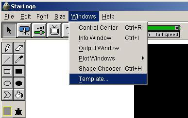
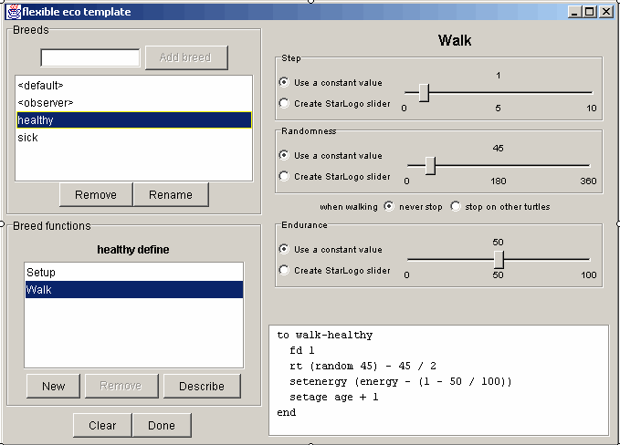
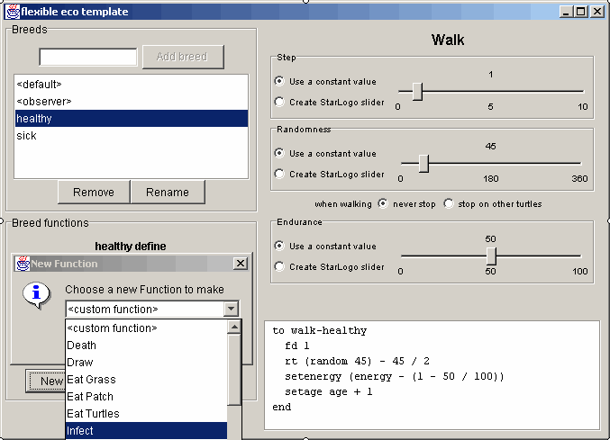
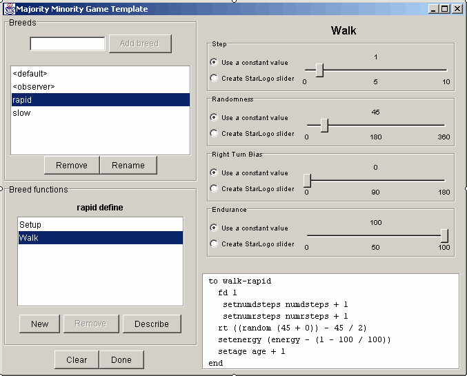
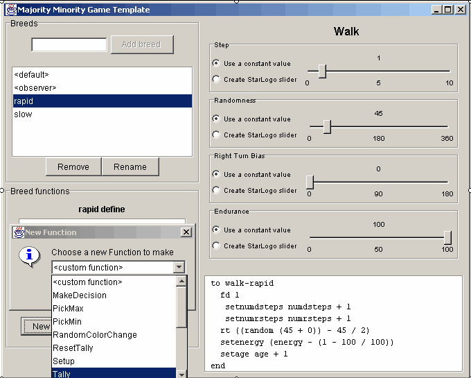

Templates |
|
| |
|
 |
|
| |
|||
|
|||
| The StarLogo Template Wizard is used to create different types of turtles and allows you to assign different behaviors to these turtles from a set of pre-defined behaviors. There are functions set up for walking, tracking other turtles, reproducing, dying and infecting other turtles. Turtles can also either eat other turtles or the patches. For each function you can choose to have it set at a fixed value or create a StarLogo slider that controls that value. Additionally, there is an observer which is used to set things up and to make the grass grow. To start the Template Wizard choose Template… from the Windows menu in the Control Center. When the file dialog appears navigate to the folder in which you installed StarLogo then find the Templates folder (Windows should put you in this folder by default) and choose the file named ecology.slogt. 
FIGURE 1: Template Menu ItemNow you can, for example, create two breeds - healthy and sick. Type healthy where it says add breed and click add breed. Do the same for sick. Now select healthy from the selector under add breed. You will be looking at the parameters for the walk function for the healthy turtles as shown here.
FIGURE 2: Ecology TemplateYou can also create your own new functions that define behavior for your breeds. To do this click on the New button and choose one of the new functions from the list (see the following page for some descriptions and hints of the relevant functions). You can always click on the Describe button when you are editing a function to find out what the function does. Note also that the StarLogo code that the walk function generates is shown in the bottom right corner.  FIGURE 3: New Function in Ecology TemplateCreate some functions and new breeds so that you think you have a starter epidemic model (it does not need to include everything at first, you can always add to it later. Now click on done and your file will be loaded into StarLogo. You have a StarLogo epidemic model. You might want to play with the model in StarLogo or look at the procedures that you created. You can edit the procedures right inside of StarLogo or you can use Template Wizard to create a new model (note: If you make any changes in the Procedures Windows those changes will not be saved if you make additional changes in the Template window. There currently is no way to go from a StarLogo model to the Template Wizard, only the other way around). You
can actually build many different types of models with the Template
Wizard. In addition to basic ecological functions it also has "infect"
and "mutate" functions for making epidemic type models.
But you can actually think of both of these types of models more
broadly. In what kinds of systems do you have individuals consuming
resources (energy, money, food, water)? In what sorts of systems
do individuals pass things around (diseases, information etc.) |
|||
|
|||
|
To start the Template Wizard choose Template… from the Windows menu in the Control Center. When the file dialog appears navigate to the Desktop and choose the file named chili.slogt. (See Figure1: Template Menu Item) Now you can, for example, create two breeds - rapid (who make decisions quickly) and slow (who take longer to decide). Type rapid where it says add breed and click add breed. Do the same for slow. Now select rapid from the selector under add breed. You will be looking at the parameters for the walk function for the rapid turtles as shown here.
 FIGURE 4: Majority/Minority TemplateYou can also create your own new functions that define behavior for your breeds. To do this click on the New button and choose one of the new functions from the list (see the following page for some descriptions and hints of the relevant functions). You can always click on the Describe button when you are editing a function to find out what the function does. Note also that the StarLogo code that the walk function generates is shown in the bottom right corner.  FIGURE 5: New Function in Majority/Minority TemplateCreate some functions and new breeds so that you think you have a starter majority/minority model (it does not need to include everything at first, you can always add to it later). Note that the order of the functions is important and some are quite critical to make anything happen. See the list on the next page for further explanations. Don't assume that some functions are just "taken care of for you." A typical model might include 1. Tally, 2. MakeDecision, 3. PickMax, and 4. ResetTally. Now click on done and your file will be loaded into StarLogo. You have a StarLogo model. You might want to play with the model in StarLogo or look at the procedures that you created. You can edit the procedures right inside of StarLogo or you can use Template Wizard to create a new model (note: If you make any changes in the Procedures Windows those changes will not be saved if you make additional changes in the Template window. There currently is no way to go from a StarLogo model to the Template Wizard, only the other way around). You
can actually build many different types of models with the Template
Wizard. In addition to basic majority/minority functions it also
has some additional functions for making other types of models.
But you can actually think of both of these types of models more
broadly. In what kinds of systems do you have individuals making
these kinds of decisions? |
Getting Started
| Community | Tutorial
Commands | Projects
| FAQ | Info